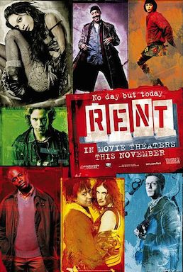

Rent

Chris Columbus
1984
135 minutes
Wikipedia link
IMDB link
TV Tropes link
This is text.
Time to choose something different:
- Landlords suck! You can't get a landlord much worse than the one in this movie, right? I mean, right? - Turn to section 56
- This was very loosely based on an opera set in Paris, and moved to New York, right? Got anything where we go the other direction and take a hard-boiled novel in the U.S. and set it in Paris with some of the genders flipped? - Turn to section 215
- I love movies about blood-borne illnesses. Show me more! - Turn to section 168